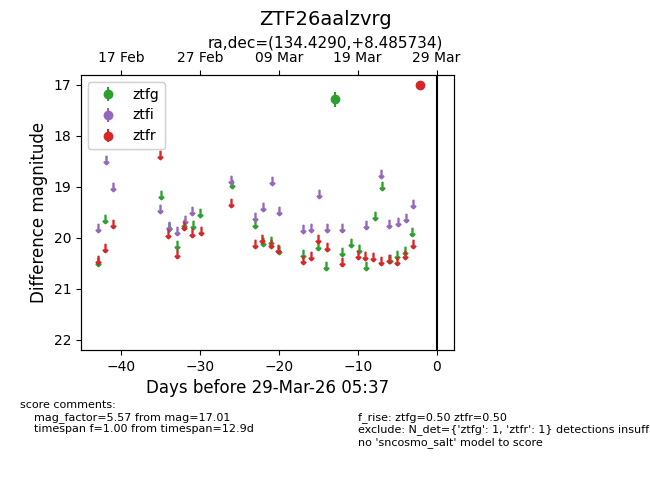
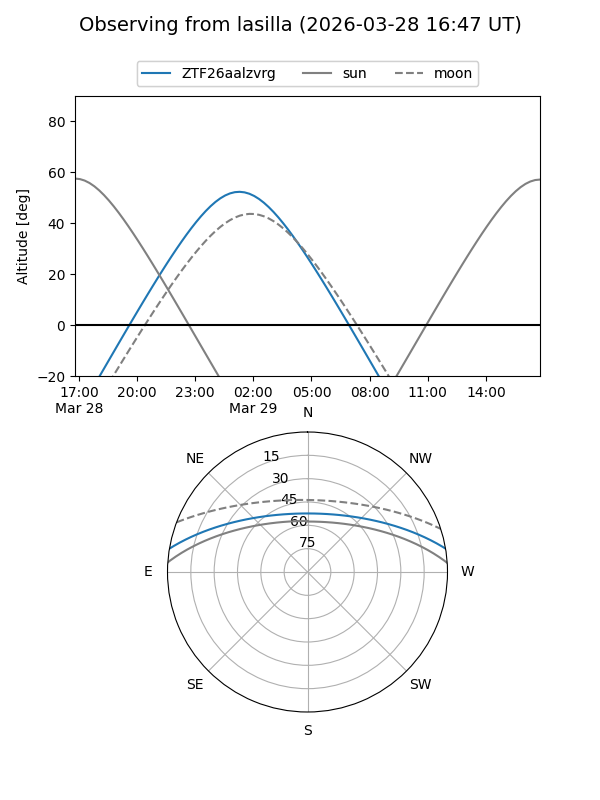
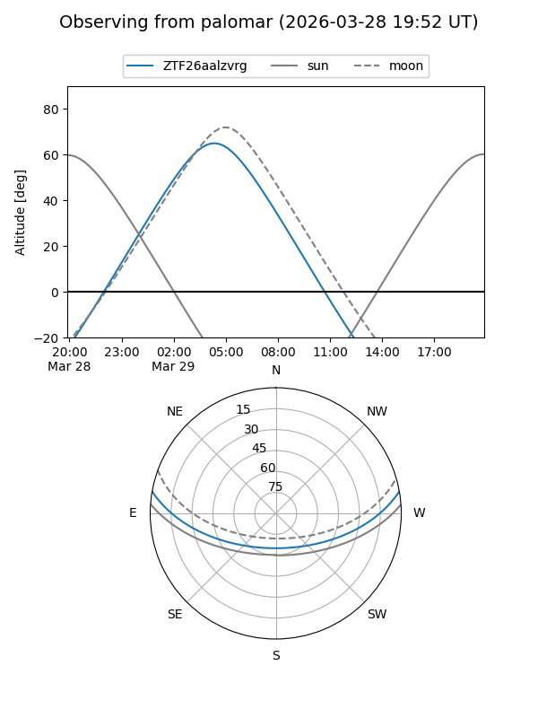

ZTF26aalzvrg
Target ZTF26aalzvrg at 2026-03-29 05:40
Aliases and brokers:
FINK: link
Lasair: link
ALeRCE: link
alt names
ZTF26aalzvrg (ztf,fink_ztf)
Coordinates:
equatorial (ra, dec) = 134.4290,+8.48573
equatorial (HMS+DMS) = 08:57:42.97,+08:29:08.64
galactic (l, b) = (220.0198,+31.87878)
Flags:
Photometry:
last ztfg=17.28, ztfr=17.01
1 ztfg, 1 ztfr detections
Lightcurve

Visibility


Additional plots